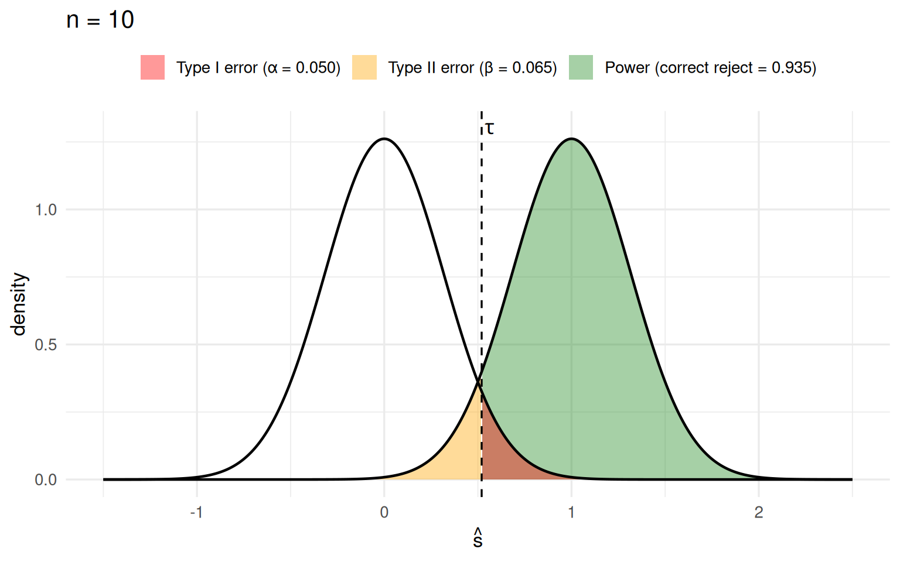
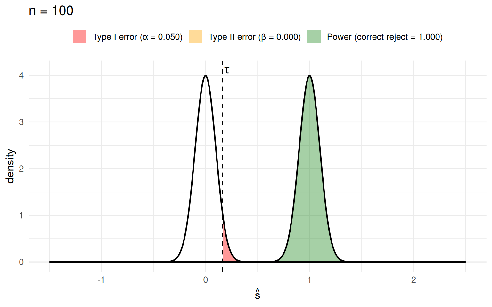
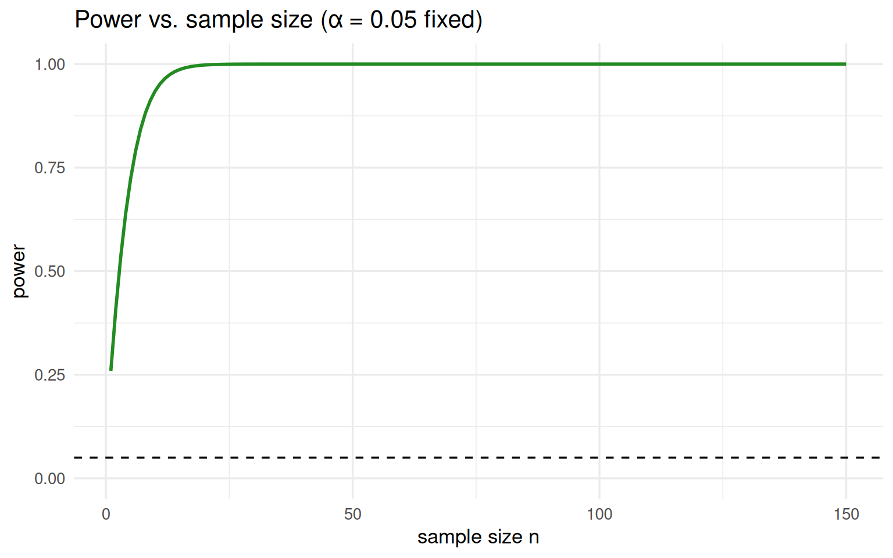

plot_power <- function(v, mu0 = 0, mu1 = 1, alpha = 0.05, title = NULL,
xlim = c(-1.5, 2.5), fill_alpha = 0.4) {
sd <- sqrt(v)
tau <- qnorm(1 - alpha, mu0, sd) # cutoff comes from the NULL
pw <- 1 - pnorm(tau, mu1, sd) # power under the alternative
xs <- seq(xlim[1], xlim[2], length.out = 1000)
d <- data.frame(x = xs, null = dnorm(xs, mu0, sd), alt = dnorm(xs, mu1, sd))
ytop <- max(d$null, d$alt)
lab_t1 <- sprintf("Type I error (\u03b1 = %.3f)", alpha)
lab_t2 <- sprintf("Type II error (\u03b2 = %.3f)", 1 - pw)
lab_pw <- sprintf("Power (correct reject = %.3f)", pw)
ggplot(d, aes(x)) +
# Type II: alternative mass LEFT of tau (orange)
geom_area(data = subset(d, x <= tau), aes(y = alt, fill = lab_t2), alpha = fill_alpha) +
# Power: alternative mass RIGHT of tau (green)
geom_area(data = subset(d, x >= tau), aes(y = alt, fill = lab_pw), alpha = fill_alpha) +
# Type I: null mass RIGHT of tau (red) -- overlaps the green softly
geom_area(data = subset(d, x >= tau), aes(y = null, fill = lab_t1), alpha = fill_alpha) +
geom_line(aes(y = null), linewidth = 0.8) +
geom_line(aes(y = alt), linewidth = 0.8) +
geom_vline(xintercept = tau, linetype = "dashed") +
annotate("text", x = tau, y = ytop * 1.03, label = "tau",
parse = TRUE, hjust = -0.3) +
scale_fill_manual(
values = setNames(c("red", "orange", "forestgreen"),
c(lab_t1, lab_t2, lab_pw)),
breaks = c(lab_t1, lab_t2, lab_pw),
name = NULL) +
coord_cartesian(xlim = xlim) +
labs(title = title, x = expression(hat(s)), y = "density") +
theme_minimal(base_size = 13) +
theme(legend.position = "top")
}Power, Type I & Type II Errors
Intro Statistics
The setup
Consider 10 data points \(x_1, \dots, x_{10}\) and two competing stories about where they came from.
- Null hypothesis \(H_0\): the data came from a Normal with mean \(0\) and variance \(1\).
- Alternative hypothesis \(H_1\): the data came from a Normal with mean \(1\) and variance \(1\).
Our test statistic is just the sample average,
\[ \hat{s} = \frac{1}{10}\sum_{i=1}^{10} x_i . \]
Normals have a special property: the sum (and therefore the average) of Normal random variables is exactly Normal. (We didn’t prove this, but it’s true.) So we know for a fact that the sampling distribution of our statistic is
\[ \hat{s}\mid H_0 \sim N\!\left(0,\ \tfrac{1}{10}\right), \qquad \hat{s}\mid H_1 \sim N\!\left(1,\ \tfrac{1}{10}\right). \]
We run a one-sided test. Let \(\tau\) be the 95% quantile of the mean-0 sampling distribution. We reject \(H_0\) if \(\hat{s} > \tau\) and fail to reject if \(\hat{s} \le \tau\).
- The area to the right of \(\tau\) under the null is the \(\alpha\) level, \(0.05\). If the data truly came from the null, there’s a 5% chance our statistic lands over there and we reject anyway → a Type I error.
- The area to the right of \(\tau\) under the alternative is the power. If the alternative is true, this is the probability we see a statistic large enough to correctly reject the null.
- The area to the left of \(\tau\) under the alternative is \(\beta\): the chance we fail to reject when we should have → a Type II error.
In practice you usually can only “see” the sampling distribution under the null, not under the alternative, so you usually don’t get to know the power.
A reusable picture
The helper below draws both sampling distributions, marks the cutoff \(\tau\) (computed from the null), and shades three regions using ggplot2. The fills are semi-transparent (via the alpha aesthetic), so where the null tail and the power region overlap just past \(\tau\) the colors blend softly instead of cutting off hard:
- red — Type I error (\(\alpha\)): null mass to the right of \(\tau\),
- orange — Type II error (\(\beta\)): alternative mass to the left of \(\tau\),
- green — power (the proper choice): alternative mass to the right of \(\tau\).
Both plots below use the same x-limits, so you can directly compare how the distributions concentrate as the sample size grows.
Sample size \(n = 10\)
Here the two sampling distributions are \(N(0, 1/10)\) and \(N(1, 1/10)\). They overlap quite a bit, so the alternative still has a fair amount of mass on the wrong side of \(\tau\) (the orange Type II region is clearly visible).
plot_power(v = 1 / 10, title = "n = 10")
The red tail under the null integrates to exactly \(\alpha = 0.05\) by construction. The green area under the alternative is the power — the probability we correctly reject when \(H_1\) is true.
Sample size \(n = 100\)
Now increase the sample size to 100. The sampling distributions become \(N(0, 1/100)\) and \(N(1, 1/100)\) — plotted on the same x-axis as above, so the tighter concentration is obvious.
plot_power(v = 1 / 100, title = "n = 100")
Two things happen at once:
- The new cutoff \(\tau^\ast\) is further left than before. The null sampling distribution is more concentrated, so its 95% quantile sits closer to 0. But 5% of its mass is still to the right of \(\tau^\ast\), so the probability of a Type I error is exactly the same as before (\(\alpha = 0.05\), the red area is unchanged).
- The alternative is now tightly concentrated near 1, with almost no mass to the left of \(\tau^\ast\). It is very unlikely the alternative produces an average below the threshold, so the orange Type II region nearly vanishes and the power increases substantially — while \(\alpha\) stays put.
| n | cutoff τ | α (Type I) | power |
|---|---|---|---|
| 10 | 0.5201 | 0.05 | 0.9354 |
| 100 | 0.1645 | 0.05 | 1.0000 |
What’s really going on
As the sample size grows, the sampling distributions under the null and the alternative concentrate on very different parts of the space, so it becomes easier to tell them apart. The alpha level is a knob we fix; increasing \(n\) buys us more power at no cost to Type I error.
The theory of hypothesis testing tells us the “correct” cutoff \(\tau\) that guarantees the Type I error control we asked for. That same \(\tau\) can also be obtained empirically — by a permutation test or a sampling test, as we did in earlier lectures.
Optional: power as \(n\) grows
To drive the point home, we can trace the power as a function of sample size while holding \(\alpha = 0.05\) fixed.
ns <- 1:150
pwr <- sapply(ns, function(n) {
sd <- sqrt(1 / n)
tau <- qnorm(0.95, 0, sd) # cutoff from the null
1 - pnorm(tau, 1, sd) # power under the alternative
})
ggplot(data.frame(n = ns, power = pwr), aes(n, power)) +
geom_line(linewidth = 1, color = "forestgreen") +
geom_hline(yintercept = 0.05, linetype = "dashed") +
coord_cartesian(ylim = c(0, 1)) +
labs(title = "Power vs. sample size (\u03b1 = 0.05 fixed)",
x = "sample size n", y = "power") +
theme_minimal(base_size = 13)
Interactive: scrub \(n\) from 10 to 100
Drag the slider to change the sample size and watch the two sampling distributions pull apart and concentrate. Flip on autoplay to sweep \(n\) automatically, like an animation. Same shading and same x-limits as the static plots above; the y-axis is fixed too, so the peaks visibly grow as the distributions tighten. The dashed line is the cutoff \(\tau\) (recomputed from the null at each \(n\)).
Note
This section uses Quarto’s built-in Observable JS, so it runs entirely in the rendered HTML — no R packages and no Shiny server required. The R sections above and this interactive one live happily in the same document.